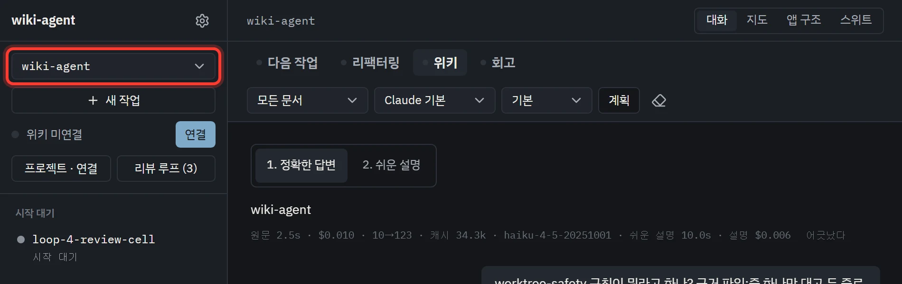
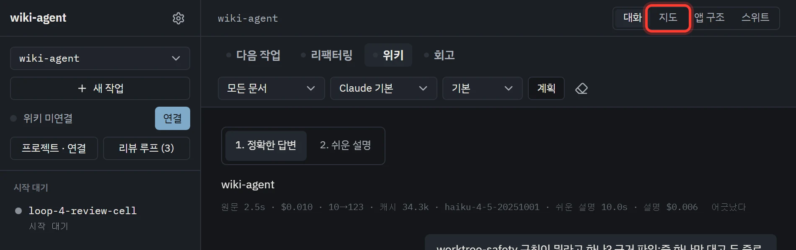
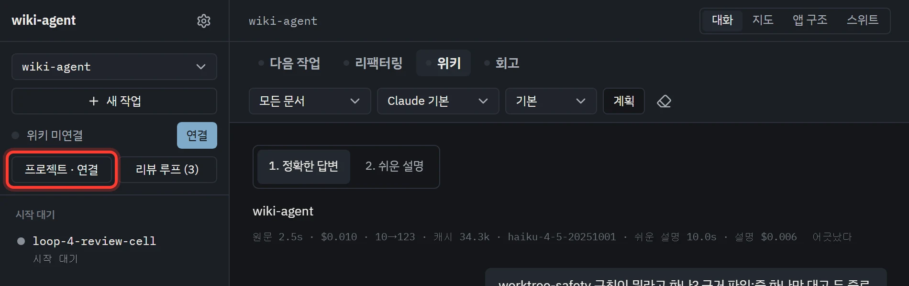
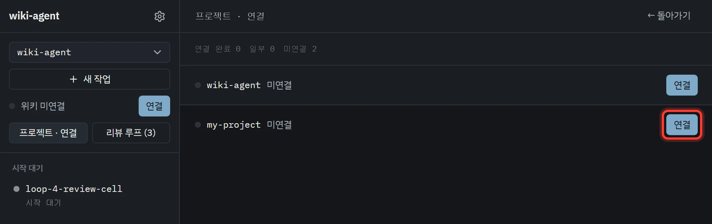

사용법
필요한 것만 골라서 설치해요
앱 실행, 내 프로젝트에 규칙 붙이기, 휴대폰 연결은 서로 따로예요. 하고 싶은 것 하나만 해도 돼요. 모델 사용량은 각자 로그인한 Claude Code나 Codex 계정에서 나가요.
A데스크톱 앱
설치하고 창 띄우기
먼저 Git, Python 3.11 이상, Node.js 22.12 이상을 깔아 두세요. 그다음 명령 네 번으로 설치를 끝내고, 나머지는 창에서 눌러서 해요.
작업 에이전트는 작업 브랜치에서 전체 권한으로 일해요. 파일을 쓸 때마다 허락을 기다리지 않으니, 중요한 변경은 커밋해 두고 쓰세요.
명령으로 하는 건 네 가지예요
-
Codex나 Claude Code 설치쓸 것 하나만 깔아요. 둘 다 깔 필요는 없어요. 깔고 나면 새 터미널을 열어요. macOS·Linux의 Claude Code는 공식 안내를 따라요.
# Codex를 쓴다면 npm install -g @openai/codex # Claude Code를 쓴다면 (Windows) winget install Anthropic.ClaudeCode
-
Rust 설치앱 창을 빌드할 때 써요. 한 번만 깔면 돼요.
# Windows winget install Rustlang.Rustup # macOS·Linux curl --proto '=https' --tlsv1.2 -sSf https://sh.rustup.rs | sh
-
받아서 설치하기저장소를 받고, 패키지 · 화면 · 지도 파일까지 한 번에 준비해요. Claude Code를 쓰면
codex자리에claude를, 둘 다 쓰면both를 넣어요. 로그인이 안 돼 있으면 공식 로그인 창이 열려요.프로젝트 목록은 위키 폴더의 상위 폴더에서 찾아요. 다른 곳에 있으면 끝에--workspace "D:/작업 폴더"를 붙여요.git clone https://github.com/littleeeeebit/wiki-agent.git cd wiki-agent python tool/setup_chat.py install --agent codex
-
키 넣기위키 폴더에
.env파일을 만들고 키를 적어요. Gemini 키는 한국어 번역에 써요. 없으면 영어 원문이 그대로 나와요.Jev 키는 선택이에요. 넣으면 Jev가 판단을 기록만 하는 상태로 시작해요. 켜는 법은 ④ 묻기 · Jev에 있어요.GEMINI_API_KEY=여기에-본인-키 # 선택: Jev TYPESAFE_API_KEY=여기에-본인-키
여기부터는 화면에서 해요
-
창 띄우고 프로젝트 고르기위키 폴더의
tool/app.cmd를 더블클릭해요(macOS·Linux는tool/app.command). 처음엔 창을 빌드하느라 몇 분 걸려요.창이 뜨면 왼쪽 위 목록에서 작업할 프로젝트를 골라요.
-
지도 보기위쪽의 [지도]를 누르면 규칙과 문서가 서로 어떻게 이어져 있는지 그림으로 나와요. 지도 파일은 설치 때 만들어 뒀어요. [대화]를 누르면 돌아와요.

-
첫 작업 맡겨 보기[다음 작업]에서 후보를 달라고 해요. 되묻는 선택지에 답하면 명세 카드가 나오고, [시작]을 누르면 에이전트가 작업 브랜치에서 일을 시작해요. 자세한 흐름은 ② 맡기기에 있어요.


새 버전이 나오면 왼쪽 아래에 카드가 떠요. [업데이트]를 누르면 받아서 다시 빌드하고, [다시 시작]으로 창을 새로 열어요. 계정 바꾸기와 문제 해결은 docs/chat-setup.md에 있어요.
B규칙 붙이기
내 프로젝트에 규칙 붙이기
A를 마쳤다면 명령은 더 필요 없어요. [연결]을 한 번 누르면 앱이 대상 프로젝트에 설정 파일(.wiki/adapter.toml)을 쓰고, 이 PC의 Claude Code · Codex에 훅을 걸고, 실제 세션을 한 턴씩 돌려 붙었는지 시험해요.
-
[프로젝트 · 연결] 열기왼쪽에서 [프로젝트 · 연결]을 눌러요. 작업 폴더 안의 저장소마다 위키가 붙었는지가 나와요.

-
내 프로젝트의 [연결] 누르기미연결인 프로젝트 줄 오른쪽의 [연결]을 눌러요. 훅이 다른 위키에 걸려 있으면 바꿀 줄을 전부 보여 주고 먼저 물어요. 끝나면 줄이 “연결 완료”로 바뀌어요.시험은 연결한 도구마다 모델 한 턴의 비용이 들어요.

-
새 세션에서 확인하기그 프로젝트에서 Claude Code나 Codex 새 세션을 열어요. 처음엔 프로젝트와 훅을 신뢰할지 물어요. 규칙에 관한 말을 했을 때 그 규칙이 붙어 오면 된 거예요.


C휴대폰
밖에서 휴대폰으로 이어 보기
-
외부 연결 켜기PC 앱에서 설정 → 휴대폰 → 외부 연결 켜기를 눌러요. 터널은 앱이 알아서 준비하고, 준비되면 연결 QR이 나와요. VPN이나 포트포워딩은 필요 없어요.
연결 링크는 5분 안에 한 번만 쓸 수 있어요. 그 링크를 연 사람은 이 PC의 작업을 조종할 수 있으니 남에게 보여 주지 마세요. PC와 앱이 켜져 있어야 이어져요.
-
QR 찍기휴대폰 카메라로 찍어 브라우저로 열어요. 작업 목록과 대화를 보고, 지시나 승인을 보낼 수 있어요. 안드로이드 앱은 선택이에요.
폴더 지도
받은 저장소의 어디에 뭐가 있나요
docs/ 문서는 대부분 영어예요. 앱의 위키 포커스에 한국어로 물으면 그 문서를 근거로 한국어로 답해요.
operator/ · craft/ | 규칙 페이지. 사람의 일하는 방식과 에이전트의 기술 |
skills/ | 절차서. 리뷰 루프, 머지 후 정리, 회고, 디자인 한 바퀴, 마크다운 쓰기 |
tool/ | 훅과 도구. 규칙 붙이기, 설치, 기록 세기, 위키 검사, 결정 기록, 자가 개선 |
tool/main/ | 앱 서버. 위키 질문, 명세, 작업 브랜치, 리뷰 루프, 계획, 리팩터링, 휴대폰 연결 |
tool/translate/ 외 | 한국어 번역(translate), 검색(search), Jev 결정(decision), 평가(eval) |
web/ · android/ | 앱 화면과 데스크톱 창, 휴대폰 앱(선택) |
docs/ | 운영 문서(영어). plans/는 계획, research/는 설계마다 남긴 조사 |
raw/ | 대화 · 리뷰 · 측정 기록. git에 올리지 않아요 |